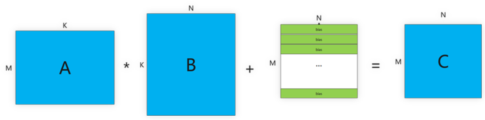
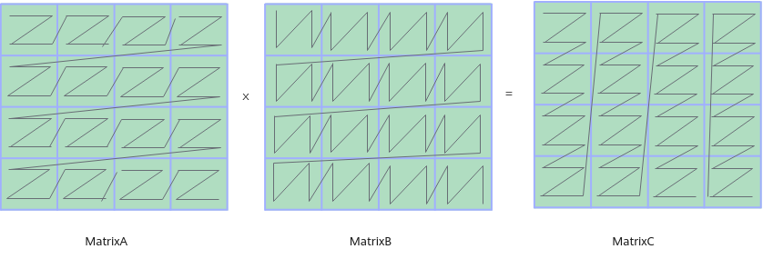
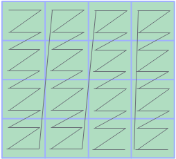
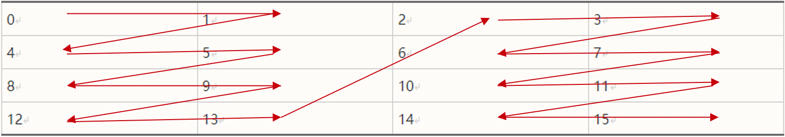
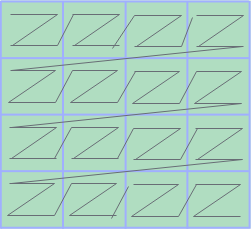
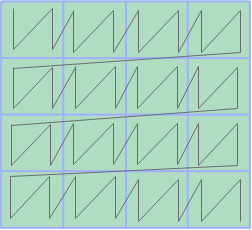

矩阵乘法介绍¶
矩阵乘法是深度学习与科学计算中最核心的运算之一。在昇腾AI处理器上，Ascend C 提供了一套高效、灵活的矩阵编程接口。本文将系统介绍矩阵乘法的基础知识，包括计算原理、数据格式、编程范式等内容，为后续使用Ascend C编程实现高性能MatMul算子的完整方法提供坚实的理论依据。
本节学习大纲如下：
1. 矩阵乘法基础¶
矩阵乘法是深度学习与高性能计算中的核心运算之一, 矩阵乘（MatMul）的基本计算公式为：
C = A × B + Bias
其中：
在 Ascend C 中，该公式通过 Matmul 对象实现，支持半精度（half）和单精度（float）数据类型。

2. 矩阵乘相关分形格式¶
数据排布格式（Data Layout Format）是深度学习中对多维Tensor在内存中存储方式的描述。常见的格式包括 NHWC 和 NCHW，它们为张量的每个维度赋予了特定的语义（如批大小、通道、高度、宽度）。除了这些通用格式外，为了充分发挥 AI 计算硬件（如 Ascend AI Core 中的 Cube 计算单元）的并行计算能力，Ascend C还引入了一系列特殊的分形格式，如 FRACTAL_NZ（简称 NZ）、FRACTAL_ZZ、NC1HWC0 等。这类格式通过重塑数据在内存中的排列方式，显著提升了矩阵乘、卷积等计算密集型运算的效率。
为什么需要分形格式？
AI Core 中的 Cube 单元是专为矩阵运算优化的硬件模块，其计算模式并非逐元素操作，而是每次以小数据块(16×16×16)为单位进行并行计算（以half数据类型为例）。为了在一个时钟周期内高效地为计算单元提供数据，内存中的数据必须满足以下条件：
传统的 ND（行优先/列优先）格式虽然适合 CPU 的缓存访问模式，但在面对 Cube 单元的块计算时，数据往往呈现跳跃式分布，导致访存延迟增加、效率降低。为此，分形格式通过数据重组，实现了计算数据在物理内存中的“对齐”。
使用Mmad基础API进行矩阵乘计算时，对矩阵输入输出的数据排布格式有一定的要求，如下图所示，要求A矩阵（位于L0A Buffer）为FRACTAL_ZZ，B矩阵（位于L0B Buffer）为FRACTAL_ZN，C矩阵（位于L0C Buffer）为FRACTAL_NZ。这些格式将矩阵划分成了一些分形（Fractal Matrix），适配Cube计算单元每次读取(16, 16)× (16, 16) 的数据进行计算的硬件特点（以half数据类型为例），从而提高矩阵计算的效率。分形的大小和数据类型有关，也和所在的存储位置有关。

2.1 FRACTAL_NZ/NZ¶
FRACTAL_NZ格式，简称NZ格式，是对一个Tensor最低两维（一个Tensor的所有维度，右侧为低维，左侧为高维）进行填充（pad）、拆分（reshape）和转置（transpose）操作后得到的格式。具体的转换过程如下：
(M，N)大小的矩阵被分为M1 * N1个分形，按照column major（列优先）排布，形状如N字形；每个分形内部有M0 * N0个元素，按照row major（行优先）排布，形状如Z字形，所以这种数据格式称为NZ格式。其中，(M0, N0)表示一个分形的大小。

通过公式表达为：
(…, B, M, N)->pad->(…, B, M1 * M0, N1 * N0)->reshape->(…, B, M1, M0, N1, N0)->transpose->(…, B, N1, M1, M0, N0)
存储示例
假设分形大小为 2×2，原始 16 个元素按行优先（ND）存储为：
0, 1, 2, 3, 4, 5, 6, 7, 8, 9, 10, 11, 12, 13, 14, 15
转换为 NZ 格式后，数据被重组为：
0, 1, 4, 5, 8, 9, 12, 13, 2, 3, 6, 7, 10, 11, 14, 15
这种排列使得在计算相邻分形块时，所需数据在物理内存中也保持相邻，极大提高了 Cube 单元的数据吞吐效率。

2.2 FRACTAL_ZZ/ZZ¶
FRACTAL_ZZ格式，简称ZZ格式，是对一个Tensor最低两维（一个Tensor的所有维度，右侧为低维，左侧为高维）进行填充（pad）、拆分（reshape）和转置（transpose）操作后得到的格式。具体转换过程如下：
(M, K)大小的矩阵被分为M1 * K1个分形，按照row major排布，形状如Z字形；每个分形内部有M0 * K0个元素，按照row major排布，形状如Z字形，所以这种数据格式称为ZZ格式。其中，(M0, K0)表示一个分形的大小，分形Shape为16 x (32B / sizeof(Datatype))，大小为512字节。

通过公式表达转换过程如下：
(…, B, M, K)->pad->(…, B, M1 * M0, K1 * K0)->reshape->(…, B, M1, M0, K1, K0)->transpose->(…, B, M1, K1, M0, K0)
对于不同的数据类型，M0和K0的大小不同：
- 位宽为4的数据类型：M0=16，K0=64。
- 位宽为8的数据类型：M0=16，K0=32。
- 位宽为16的数据类型：M0=16，K0=16。
- 位宽为32的数据类型，M0=16，K0=8。
2.3 FRACTAL_ZN/ZN¶
FRACTAL_ZN格式，简称ZN格式，是对一个Tensor最低两维（一个Tensor的所有维度，右侧为低维，左侧为高维）进行填充（pad）、拆分（reshape）和转置（transpose）操作后得到的格式。具体转换过程如下：
(K, N)大小的矩阵被分为K1 * N1个分形，按照row major排布，形状如Z字形；每个分形内部有K0 * N0个元素，按照column major排布，形状如N字形，所以这种数据格式称为ZN格式。其中，(K0, N0)表示一个分形的大小，分形shape为 (32B / sizeof(Datatype)) x 16，大小为512字节。

通过公式表达转换过程如下：
(…, B, K, N)->pad->(…, B, K1 * K0, N1 * N0)->reshape->(…, B, K1, K0, N1, N0)->transpose->(…, B, K1, N1, N0, K0)
对于不同的数据类型，K0和N0的大小不同：
- 位宽为4的数据类型：K0=64，N0=16；
- 位宽为8的数据类型：K0=32，N0=16；
- 位宽为16的数据类型：K0=16，N0=16；
- 位宽为32的数据类型：K0=8，N0=16。
分形格式（如 NZ）通过硬件友好的数据重排，解决了传统 ND 格式在矩阵块计算中访存不连续、数据复用率低的问题。它不仅适应了 AI Core 的并行计算特性，也为实现高性能算子（如矩阵乘、卷积）提供了关键的内存布局基础。在 Ascend C 编程中，正确使用 FRACTAL_ZZ、FRACTAL_ZN、FRACTAL_NZ 等对应格式，是发挥硬件算力的重要一环。